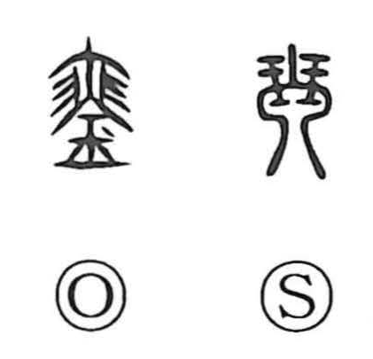

琴

Kun: koto | On: kin
koto ・ zither
Explanation
Shirakawa takes 琴 as a phono-semantic graph. In seal script it pictured the entire koto, but later the drawing was pared down to highlight the stretch of strings, and the phonetic element 今 (read kin) was added to yield the present form. The koto, fashioned from carefully chosen paulownia wood, was a sacred instrument used to summon the gods. Early kotos commonly had five or seven strings; much larger zithers with twenty-five, fifty, or more strings were called 瑟 (shitsu). From their harmonious pairing comes the expression 琴瑟相和, which likens the blending of koto and shitsu to the mutual harmony of husband and wife.